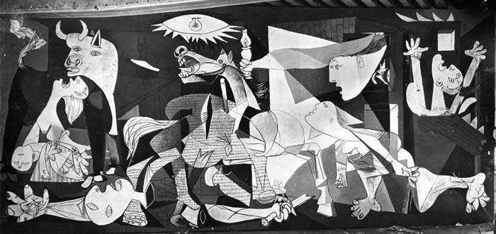

El artista español la creó poco después de los bombardeos alemanes que cayeron sobre Villa Vasca de Guernica, para denunciar el sacrificio abominable de civiles inocentes y expresar su repudio hacia los militares y la guerra. El cuadro es considerado uno de las obras más importantes de Picasso y de todo el siglo XX, actualmente está en el Museo de Arte Reina Sofía, en Madrid.
La Guernica
